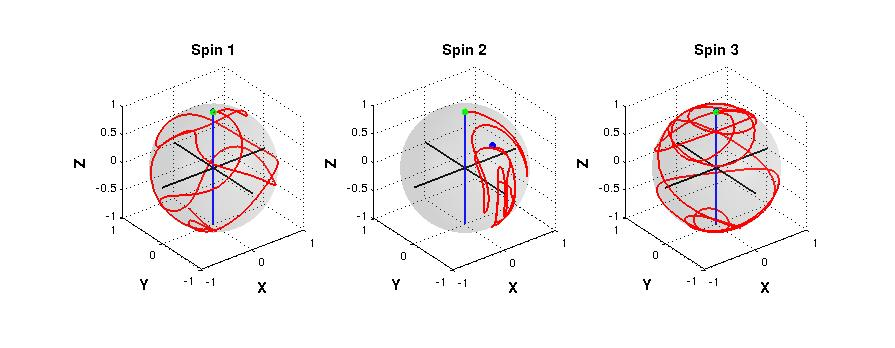

FileName : barGRAPE
Contents
Description
Plots the trajectory of each spin traced under the application of a GRAPE pulse.
Command
BlochTraj(GRinfo,indm,sep_plot,state)
GRinfo : Variable in which all the information of grape pulse is stored.
indm : Initial density matrix on which the pulse will be applied, by default it is the thermal equilibrium density matrix of NMR system.
sep_plot : option for creating separate figures for each spin. input 'y' for separate, default is 'n'.
state : option if you're plotting a state to state transfer GRAPE pulse. Input 'y', default is 'n'.
Example Output
Shown below is an example plot. Green dot represents the strating point and blue is the end point. This pariticular pulse is applying 45x on 2nd spin. As it is visible that only the second spin has changed the place appropirately.

function BlochTraj(GRinfo,indm,sep_plot,state) global gra gra = GRinfo; %--------------Declaring Defaults-------------- if (nargin < 2 || isempty(indm)); indm=zeros(2^gra.nspins); indm(1,1)=1; end if (nargin < 3 || isempty(sep_plot)); sep_plot='n'; end if (nargin < 4 || isempty(state)); state='n'; end %---------------------------------------------- [X1,Y1,Z1]=sphere(60); sx=[0 1; 1 0]; sy=[0 -1i; 1i 0]; sz=[1 0 ; 0 -1]; Ud=expm(-1i*gra.initdelay*gra.Hint); u=gra.u; X(:,:,1)=eye(2^gra.nspins); U=zeros(2^gra.nspins,2^gra.nspins,gra.N); for j=1:gra.N su=zeros(2^gra.nspins); for k=1:gra.m su=su + u(j,k)*gra.Hrf{1,k}; end U(:,:,j) = expm(-1i*(gra.T/gra.N)*(gra.Hint + su)); X(:,:,j+1)=U(:,:,j)*X(:,:,j); end if sep_plot ~= 'y'; h=figure; end; for k=1:gra.nspins if sep_plot ~= 'y'; subplot(1,gra.nspins,k); end; if sep_plot == 'y'; figure; end; surfl(X1,Y1,Z1); xe=xlabel('X'); ye=ylabel('Y'); ze=zlabel('Z'); te=title(['Spin ' num2str(k)]); set([xe ye ze],'Fontsize',12,'FontWeight','bold'); set(te,'Fontsize',12,'FontWeight','bold') colormap('gray'); shading interp; alpha(.15); hold on ax=-1:.05:1; a=length(ax); plot3(zeros(a,1),zeros(a,1),ax,'b','Linewidth',1.2) plot3(zeros(a,1),ax,zeros(a,1),'k','Linewidth',1.2) plot3(ax,zeros(a,1),zeros(a,1),'k','Linewidth',1.2) trmat=zeros(gra.nspins,1); trmat(k)=1; rx=zeros(gra.N+1,1); ry=zeros(gra.N+1,1); rz=zeros(gra.N+1,1); dm_t=zeros(2^gra.nspins,2^gra.nspins,gra.N); dm1_t=zeros(2,2,gra.N); dm_t(:,:,1)=indm; dm1_t(:,:,1)=partial_trace(dm_t(:,:,1),trmat); rx(1)=trace(sx*dm1_t(:,:,1)); ry(1)=trace(sy*dm1_t(:,:,1)); rz(1)=trace(sz*dm1_t(:,:,1)); for j=1:gra.N if j==1 dm_t(:,:,j+1)=U(:,:,j)*Ud*dm_t(:,:,j)*Ud'*U(:,:,j)'; dm1_t(:,:,j+1)=partial_trace(dm_t(:,:,j+1),trmat); elseif j==gra.N && state=='n' dm_t(:,:,j+1)=Ud*U(:,:,j)*dm_t(:,:,j)*U(:,:,j)'*Ud'; dm1_t(:,:,j+1)=partial_trace(dm_t(:,:,j+1),trmat); else dm_t(:,:,j+1)=U(:,:,j)*dm_t(:,:,j)*U(:,:,j)'; dm1_t(:,:,j+1)=partial_trace(dm_t(:,:,j+1),trmat); end rx(j+1)=trace(sx*dm1_t(:,:,j+1)); ry(j+1)=trace(sy*dm1_t(:,:,j+1)); rz(j+1)=trace(sz*dm1_t(:,:,j+1)); end % dm_t(:,:,gra.N+1) plot3(real(rx),real(ry),real(rz),'r','Linewidth',1.2) plot3(real(rx(1)),real(ry(1)),real(rz(1)),'go','Linewidth',1.2,'MarkerFaceColor','g') plot3(real(rx(end)),real(ry(end)),real(rz(end)),'bo','Linewidth',1.2,'MarkerFaceColor','b') R(1,k)=real(rx(end)); R(2,k)=real(ry(end)); R(3,k)=real(rz(end)); axis square end